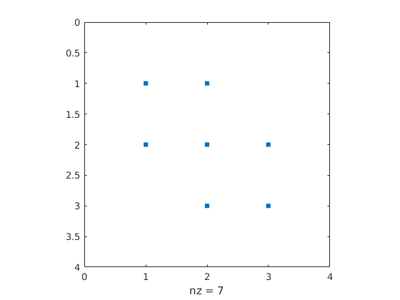
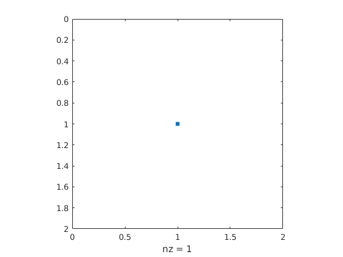

Contents
Q5 - sparse matrices
% matlab has sparse versions of most inbuilt functions which operate much % faster than their dense counterparts A=diag(diag(2*ones(100)))+diag(ones(99,1),1)+diag(ones(99,1),-1); %Number of nonzero matrix elements nnz(A) %Visualize sparsity pattern % plots the sparsity pattern of any matrix S. spy(A) %looking at a different pattern: the connectivity graph of buckminster %fuller geodesic dome/ football / c60 molecule B = bucky; spy(B) Ainv=inv(A); spy(Ainv) %to give an idea of what happens to the matrix, here is analysis of %Ainv(1:3,1:3) E = [2 1 0; 1 2 1; 0 1 2] inv(E) Ainv(1:3,1:3) %sparse creates a sparse matrix B=sparse(A); spy(B) % to demonstrate what is happening: F=sparse(E); spy(F) % spy(A-B) example for simpler example %spy(E-F) % no pattern is shown because F is the same as E, just a sparse format of % the matrix
ans =
298
E =
2 1 0
1 2 1
0 1 2
ans =
0.7500 -0.5000 0.2500
-0.5000 1.0000 -0.5000
0.2500 -0.5000 0.7500
ans =
0.9901 -0.9802 0.9703
-0.9802 1.9604 -1.9406
0.9703 -1.9406 2.9109
 whos
% this command shows that A uses 16 fold more space than B %A inv has lots of non-zero entities because the way that inversing a %matrix works means that the diagonal matrix is spread outwards through the %matrix once it has been inverted % Name Size Bytes Class Attributes % % A 100x100 80000 double % B 100x100 5576 double sparse
more sparse matrices
% speye command - this is a sparse identitiy matrix speye(5) %Sparse uniformly distributed random matrix % sprand(m,n,d) gives mxn matrix with rand value density of 10% C=sprand(10,10,0.1) spy(C) % to find the random values: [i,j,v] = find(C) %to find the matrix locations where the values have been placed in the %matrix [i,j]=find(C>0.5) % spdiags: Extract and create sparse band and diagonal matrices t = spdiags(ones(10,1),10,10) % spdiags(A,d,m,n) where A is matrix and d is density and m and n are % matrix dimensions s = spdiags(ones(10,1)*[-1,2,-1],[-1,0,1],10,10) spy(t) clear
ans =
(1,1) 1
(2,2) 1
(3,3) 1
(4,4) 1
(5,5) 1
C =
(2,3) 0.8109
(4,3) 0.4631
(6,3) 0.9722
(3,4) 0.8118
(3,6) 0.6706
(4,6) 0.4900
(5,7) 0.3320
(6,9) 0.3675
(7,9) 0.8321
i =
2
4
6
3
3
4
5
6
7
j =
3
3
3
4
6
6
7
9
9
v =
0.8109
0.4631
0.9722
0.8118
0.6706
0.4900
0.3320
0.3675
0.8321
i =
2
6
3
3
7
j =
3
3
4
6
9
t =
(1,1) 10
s =
(1,1) 2
(2,1) -1
(1,2) -1
(2,2) 2
(3,2) -1
(2,3) -1
(3,3) 2
(4,3) -1
(3,4) -1
(4,4) 2
(5,4) -1
(4,5) -1
(5,5) 2
(6,5) -1
(5,6) -1
(6,6) 2
(7,6) -1
(6,7) -1
(7,7) 2
(8,7) -1
(7,8) -1
(8,8) 2
(9,8) -1
(8,9) -1
(9,9) 2
(10,9) -1
(9,10) -1
(10,10) 2
 5b -
% eye gives square identity matrix A=2*eye(500)-diag(ones(499,1),1)-diag(ones(499,1),-1); tic, A*A; toc B=spdiags(ones(500,1)*[-1,2,-1],[-1,0,1],500,500); tic, B*B; toc % B is sparse so it is much quicker to perform matrix multiplication# b=ones(500,1); tic,A\b; toc tic, B\b; toc % it is much faster to do N\b for sparse matrices
Elapsed time is 0.001968 seconds. Elapsed time is 0.000183 seconds. Elapsed time is 0.002135 seconds. Elapsed time is 0.000096 seconds.